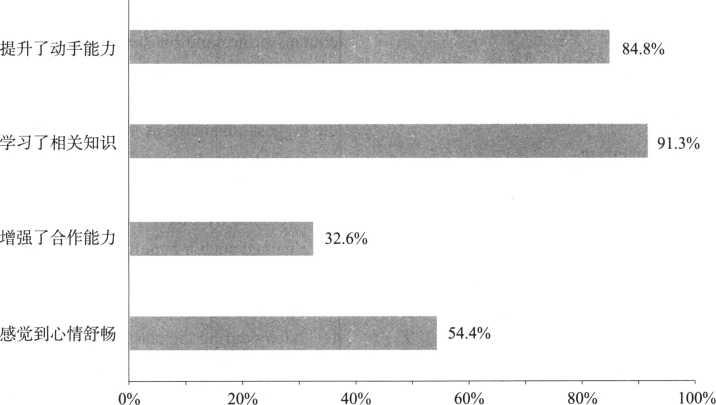

yy-2024-48
Write an essay based on the chart below. In your essay, you should
1) describe and interpret the chart, and
2) give your comments.
Write your answer in about 150 words on the ANSWER SHEET.
某高校劳动实践课学生主要收获调查

The bar chart illustrates the major gains students have obtained from a practical course at a certain university. Notably, 91.3% of students reported acquiring relevant knowledge, and 84.8% honed their hands-on skills. Additionally, a considerable 54.4% reported a boost in well-being. However, only a minority, 32.6%, felt their teamwork abilities improved.
The course's success in imparting theoretical knowledge and practical skills is clear, reflecting its strong emphasis on fostering individual competencies. However, the modern labor market demands not only professional expertise but also the ability to work effectively in teams. The underdevelopment of cooperative skills as indicated by the survey points to a need for more collaborative activities in the course. At the same time, the course's positive influence on students' well-being is a critical aspect that should be maintained and highlighted as a model for student-centered education.
To optimize the curriculum, it is recommended to integrate more group projects that encourage interaction and teamwork. This, combined with the benefits of the course in enhancing individual capabilities and well-being, would create a more comprehensive educational experience.
本题讲解：2024 大作文 · 劳动实践课收获条形图
答案：图表作文（15 分），评分口径 = 描图准确 + 解读到位 + 建议可行。图表四项数据：相关知识 91.3%、动手能力 84.8%、心情舒畅 54.4%、合作能力 32.6%——两高、一中、一低，三档分明，这个落差就是文章的立意所在。
第 0 步：先立机制——图表作文的"数据 → 寓意 → 建议"三级火箭
图表作文最常见的死法是"只描图不解读"。正确机制是三级推进：
- 描图：按从大到小的顺序报数据，用衔接词（Notably → Additionally → However）把四根柱子串成一段；
- 解读：数字只是现象，要回答"说明什么"——高数据说明课程重个人能力（知识与动手），低数据说明短板在合作能力，中等数据（心情舒畅）是可挖掘的亮点；
- 建议：针对短板给一条具体可行的建议（增加小组项目），再回扣优势，收出"更全面的教育体验"。
第 1 步：读图——四根柱子各归其位
| 收获 | 占比 | 分层 | 寓意方向 |
|---|---|---|---|
| 学习相关知识 | 91.3% | 最高档 | 课程在知识传授上成功 |
| 提升动手能力 | 84.8% | 最高档 | 强调个人操作能力 |
| 心情舒畅 | 54.4% | 中档 | 对心理健康有积极作用 |
| 增强合作能力 | 32.6% | 最低档 | 短板：协作活动偏少 |
描述顺序固定"从大到小"：最高两项并列报 → 中项补一句 → 最低项用 However 转折突出落差。
第 2 步：谋篇——三段各干一件事
- 第一段（描图，4 句）：首句概括图表主题（条形图显示学生在劳动实践课中的主要收获），随后 3 句按 91.3% → 84.8% → 54.4% → 32.6% 依次报数；
- 第二段（解读，4 句）：先肯定优势——课程在传授知识与技能上的成功反映了它对个人能力培养的重视；再指出矛盾——现代就业市场不只看专长，还要团队合作，32.6% 的落差说明课程需要更多协作活动；最后补一笔——课程对心情舒畅的积极影响应保持并发扬，作为以学生为中心教育的样板；
- 第三段（建议，2 句）：为优化课程，建议加入鼓励互动与团队合作的小组项目；在保持原有优势的基础上补齐短板，创造更全面的教育体验。
第 3 步：高分表达（按功能备一块词板）
| 功能 | 表达 | 说明 |
|---|---|---|
| 概括图表 | The bar chart illustrates the major gains... | illustrate 替换 show |
| 报数据 | 91.3% of students reported acquiring... / 84.8% honed their hands-on skills | report a boost in sth 替换 say sth increased |
| 转折突出 | However, only a minority, 32.6%, felt... | only a minority 把落差说足 |
| 指出短板 | ...points to a need for more collaborative activities | 外刊句型 point to a need for |
| 建议措施 | it is recommended to integrate more group projects | recommend 虚拟语气口吻 |
| 收束升华 | would create a more comprehensive educational experience | comprehensive 回扣"全面" |
第 4 步：预判追问
- 四个数字必须全报吗？：必须。饼图/条形图作文漏报数据是硬伤；顺序上从大到小，把最低的留给 However，落差自然变成论点。
- 第二段评论的"中心句"怎么立？：用"优势 + 不足"双线结构——先接住高数据（个人能力），再借就业市场需要团队合作把低数据升格为问题，这样评论才有张力，而不是把数字再说一遍。
- 建议可以只写一句吗？：建议要"具体 + 意义"两件套：做了什么（小组项目）、能带来什么（弥补合作短板 + 更全面的体验），一句空话不如两句实在。
易错点
- 只描图不解读：第一段写完直接结尾，缺寓意与建议 → 内容严重不足；
- 数据排序混乱：想到哪个写哪个，90% 和 32% 混着报，落差被稀释，However 也立不起来；
- 解读跑偏：把 32.6% 强行说成"多数学生不认可课程"——低分项只是"提升合作能力"这一项收获占比低，不是对课程整体否定；
- 建议空泛：只写 "we should pay more attention to teamwork"，没有具体措施（小组项目、协作活动）支撑。
记忆锚点：图表作文三级火箭 = 描图（从大到小）→ 解读（优势 + 短板双线）→ 建议（措施 + 意义）；Notably / Additionally / However 串数据；point to a need for 引建议；漏数据、乱排序、空建议是三大硬伤。